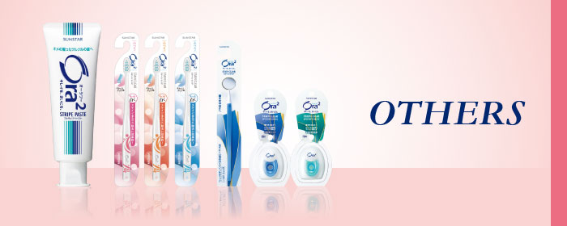
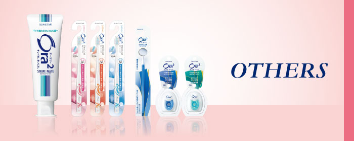
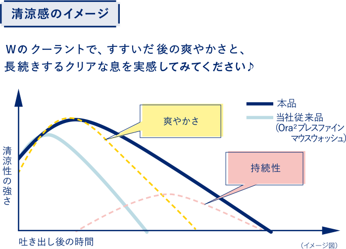
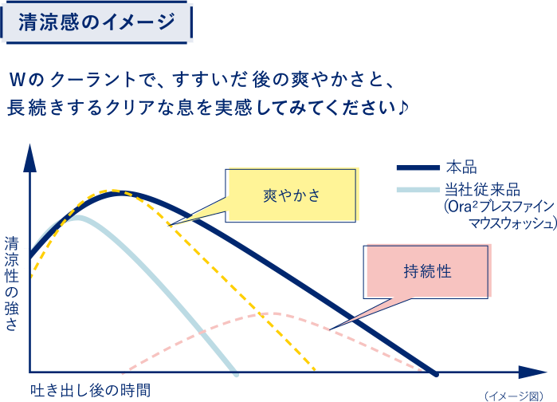

朝にコーヒーを飲んで、ランチにカレーを食べ、おやつにチョコレート、夜は赤ワインで女子会！
毎日の楽しいガールズフードも、実は全部ステインの原因なんです。


コーヒー、紅茶、赤ワイン、チョコレート、カレー、プルーン、などに含まれるポリフェノールが、歯の表面を覆っているベリクルと呼ばれる唾液成分と結合して、ステインになってしまうのです。
ステインは毎日の飲食によって徐々に蓄積され、やがて目に見えるようになっていきます。


水だけでは簡単に落ちない！

通常のブラッシングケアだけでは落ちにくい！


ステインケアに効果的なオーラツーアイテムを使おう！

自分に合ったタイプを選べる♪
3つのアクションで歯本来の白さをキープ！
ニオイのもととステインのもとをすすいで洗い流すマウスウォッシュ。
歯みがきできない時の時短ケアにも。


 
